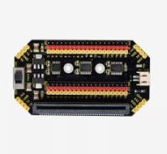
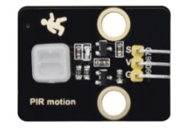
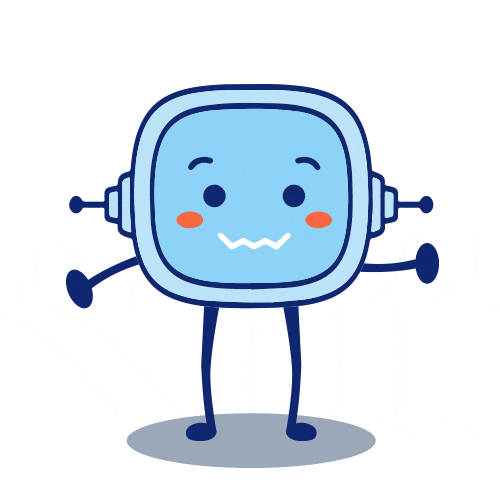

Un hogar inteligente
3.3. Una casa con sentidos
 Es el momento de conectar otros sensores a nuestra placa micro:bit. La tarjetas disponen de una serie de sensores integrados que permiten obtener datos del entorno como el sensor de temperatura, acelerómetro, intensidad de luz, brújula, micrófono, o botones. Además, se pueden conectar fácilmente otro tipo de sensores y actuadores, para eso se suelen utilizar placas de expansión que disponen de pines macho donde puedes conectar lo que quieras.
Es el momento de conectar otros sensores a nuestra placa micro:bit. La tarjetas disponen de una serie de sensores integrados que permiten obtener datos del entorno como el sensor de temperatura, acelerómetro, intensidad de luz, brújula, micrófono, o botones. Además, se pueden conectar fácilmente otro tipo de sensores y actuadores, para eso se suelen utilizar placas de expansión que disponen de pines macho donde puedes conectar lo que quieras.
1. Escudos para conectar sensores
Los pines se utilizar para conectar y comunicar dispositivos externos. Aunque la placa micro:bit tiene distintos pines, se suelen utilizar escudos o placas de expansión que permiten realizar estas conexiones de manera más sencilla.
- Estos pines suelen estar numerados.
- Las conexiones tienen dos clavijas 3V y GND que se utilizan para la alimentación y otro numerado de SEÑAL para los datos.

2. Conectando sensores
A continuación te muestro algunos sensores que podemos utilizar en este escudo y la conexión para la placa.
| Sensor de temperatura y humedad | Sensor de movimiento | Led externo | Sensor de vapor |
 |
 | ||
3. Programando sensores
En grupos de cuatro comenzaremos a realizar las conexiones.
Clavis dice ¿Ayuda con las instrucciones?
Sensor de movimiento PIR
Vamos a programar este sensor como una posible alarma para nuestra casa asociada a la pantalla de nuestra micro:bit para mostrar una imagen y reproducir un sonido. Conecta
GND (G) 5V (V) Señal Pin 15
Led externo
Además de los leds de la micro:bit en su frontal, podemos conectar otros leds y programarlos para que actúen según unas ordenes. Vamos a ver cómo hacer que un pin externo se encienda y se apague repetidas veces. Conecta
GND (G) 5V (V) Señal Pin 16
Sensores analógicos
El sensor de humedad de suelo y el sensor de vapor son sensores analógicos y se utilizan para tomar datos y mostrarlos en la pantalla de la micro:bit o en una pantalla externa.
En este ejemplo, el programa leerá la señal analógica que pongamos en nuestro puerto P0 y, dependiendo del volumen, encenderá más o menos LEDs en la matriz.
5. ODS para todos
¿Qué son los Objetivos Mundiales?
Los Objetivos Mundiales son una llamada a la acción elaborada por todos los países para fomentar la prosperidad de todo el mundo mediante la protección del planeta.
Los Objetivos Mundiales u Objetivos de Desarrollo Sostenible son una colección de 17 objetivos interrelacionados con acciones acordadas por los 193 países miembros de las Naciones Unidas en 2015.
Es el acuerdo internacional más ambicioso hasta ahora para erradicar la pobreza y la desigualdad, proteger la salud e impedir el avance del cambio climático.
¿Yo puedo hacer algo?
Debatimos en clase:
¿Cuántos años tendrás en 2030?». Esa es la fecha límite para alcanzar los Objetivos de Desarrollo Sostenible.
1. Piensa la respuesta de forma individual y, después, que debatan en parejas: «¿Cómo crees que será tu vida en 2030? ¿En qué podrías estar trabajando? ¿Qué te gustaría estudiar? ¿Cómo invertirás tu tiempo?»
2. Vamos a diseñar un país de Objetivos Mundiales. Cada grupo dibujará su propia visión de cómo será un país en 2030 si se alcanzan los objetivos. Debatimos en grupos: «¿Qué tendrá que cuidar tu país, además de su población, el entorno y los recursos naturales? Por ejemplo, centros educativos, hospitales, fuentes de agua, sistemas de tratamiento de residuos, carreteras seguras…».
Un robot para salvar el mundo
Accede al siguiente articulo y comentad en clase.
https://www.infoplc.net/plus-plus/tecnologia/item/111212-ods-naciones-unidas-robots-ifr
Obra publicada con Licencia Creative Commons Reconocimiento No comercial Compartir igual 4.0